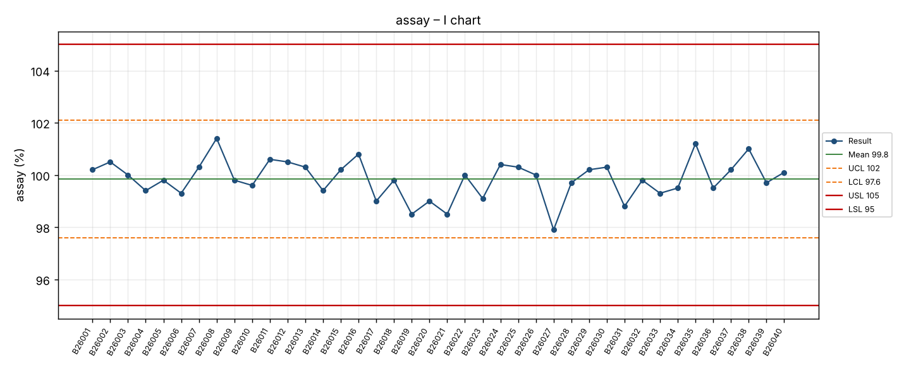
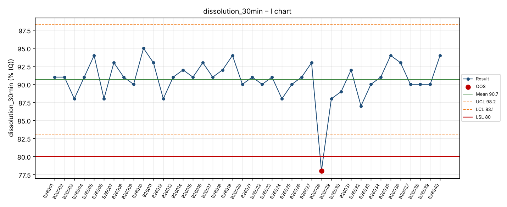
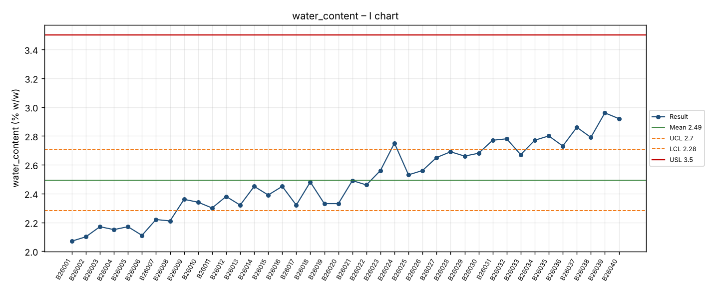
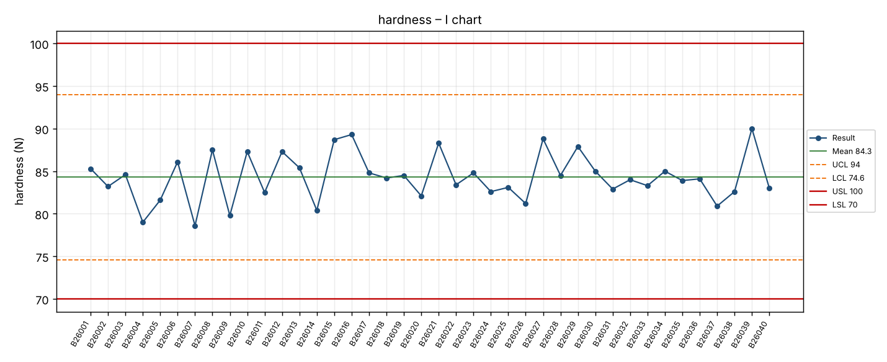

APQR Statistical Summary – Demo Tablets 500 mg
Review period: Jan–Dec 2026
Generated: 2026-11-25 with apqr-toolkit
| Parameter | Spec | n | Mean | SD | RSD % | Min | Max | Cpk | Ppk | OOS | Verdict |
|---|
| assay | 95 – 105 % | 40 | 99.847 | 0.743 | 0.74 | 97.900 | 101.400 | 2.15 | 2.18 | 0 | In control |
| dissolution_30min | ≥ 80 % (Q) | 40 | 90.675 | 2.832 | 3.12 | 78.000 | 95.000 | 1.41 | 1.26 | 1 | OOS results - CAPA required |
| water_content | ≤ 3.5 % w/w | 40 | 2.493 | 0.249 | 10.00 | 2.070 | 2.960 | 4.78 | 1.35 | 0 | Out-of-trend signals - evaluate |
| hardness | 70 – 100 N | 40 | 84.287 | 2.811 | 3.33 | 78.600 | 90.000 | 1.47 | 1.69 | 0 | In control |
assay
- Control limits (I-chart): LCL 97.590 / CL 99.847 / UCL 102.105
- Capability: Ppk 2.18 → Highly capable
- OOS batches: None
- Trend rules: no signals

dissolution_30min
- Control limits (I-chart): LCL 83.105 / CL 90.675 / UCL 98.245
- Capability: Ppk 1.26 → Marginally capable - monitor
- OOS batches: B26028
- Rule 1: Point beyond 3σ control limit – batches B26028

water_content
- Control limits (I-chart): LCL 2.283 / CL 2.493 / UCL 2.704
- Capability: Ppk 1.35 → Capable
- OOS batches: None
- Rule 1: Point beyond 3σ control limit – batches B26001, B26002, B26003, B26004, B26005, B26006, B26007, B26008, B26024, B26031, B26032, B26034, B26035, B26036, B26037, B26038, B26039, B26040
- Rule 2: 9 consecutive points on the same side of the mean (shift) – batches B26001, B26002, B26003, B26004, B26005, B26006, B26007, B26008, B26009, B26010, B26011, B26012, B26013, B26014, B26015, B26016, B26017, B26018, B26019, B26020, B26021, B26022, B26023, B26024, B26025, B26026, B26027, B26028, B26029, B26030, B26031, B26032, B26033, B26034, B26035, B26036, B26037, B26038, B26039, B26040
- Rule 5: 2 of 3 consecutive points beyond 2σ on the same side – batches B26001, B26002, B26003, B26004, B26005, B26006, B26007, B26008, B26010, B26011, B26013, B26017, B26019, B26020, B26027, B26028, B26029, B26030, B26031, B26032, B26033, B26034, B26035, B26036, B26037, B26038, B26039, B26040

hardness
- Control limits (I-chart): LCL 74.570 / CL 84.287 / UCL 94.005
- Capability: Ppk 1.69 → Highly capable
- OOS batches: None
- Trend rules: no signals

Statistics support, but do not replace, QA review and conclusions in the APQR.